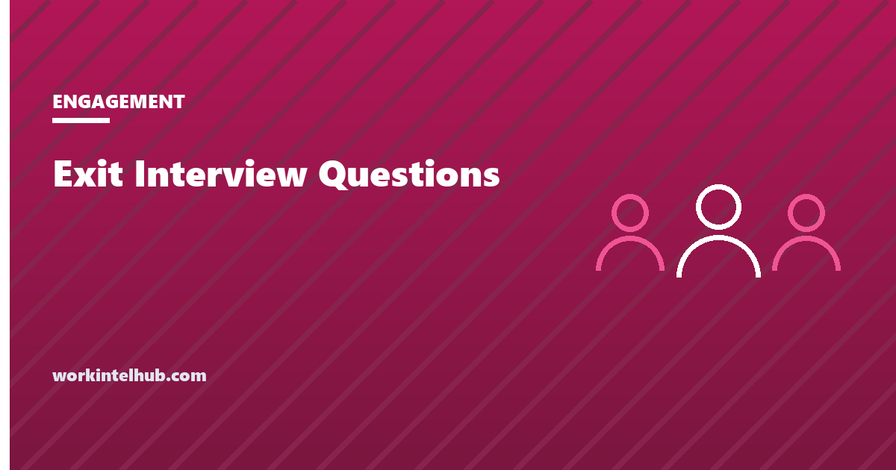

Exit Interview Questions

An exit interview is a structured conversation with an employee who has resigned, held before their last day, to find out why they are leaving and what the organisation could have done differently.
There are plenty of question lists online, and the questions below are drawn from the same well. What the lists leave out is that exit interview answers are biased in a predictable direction, that most organisations never do anything with them, and that one category of answer creates a legal obligation the moment it is spoken. Those three things decide whether the interview is worth an hour of anyone's time.
The questions, grouped by what they tell you
Six groups. You will not ask all twenty-four; pick one or two from each group that fit the person and the role, and ask the same core set every time so answers can be compared.
Why they are leaving
- What prompted you to start looking, and when was that?
- Was there a specific moment when you decided to leave?
- What does the new role offer that this one did not?
- Was there anything that would have changed your decision, and at what point?
The second question is the most useful in the whole interview. People usually name a single event, and the event is usually months before the resignation.
The role
- Did the job match what you were told when you were hired?
- Did you have the tools, information and authority to do the job well?
- Which parts of the role took the most time relative to their value?
- What would you change about the role for the next person?
The manager
- How often did you get feedback that you could act on?
- Did you feel your manager understood what you were working on?
- When you raised a concern, what happened?
- What should your manager keep doing, and what should they stop?
Expect the eleventh question to be answered vaguely. The section on bias explains why, and what to do about it.
The team and culture
- How would you describe the team to a friend thinking of applying?
- Did the stated values match how decisions actually got made?
- Was workload manageable, and when it was not, did anyone notice?
- Did you feel able to disagree with a decision openly?
Development and pay
- Did you see a path to the role you wanted here?
- When did you last have a conversation about your development, and who started it?
- Was your pay discussed with you at any point before you resigned?
- Is the new role a step up in level, in pay, or both?
Closing
- Is there anything you were never asked about that you think we should know?
- Would you consider coming back, and under what conditions?
- Would you recommend this company to someone, and for which roles?
- Is there anything you would like handled confidentially?
The last question matters more than it looks. It is the one that surfaces the answers covered under "when an answer is a complaint" below, and it signals that you are prepared to hear them.
Why the answers are biased by design
Exit interview data has a structural problem that no question wording fixes. The person answering has already decided to leave, wants a reference, may want to come back, and is often being asked by someone who reports into the same chain as the manager they are describing. Every one of those pushes the answer toward "better opportunity" and away from naming a person.
Three consequences follow.
- "Career growth" and "compensation" are over-reported. They are true, safe and unfalsifiable. When an organisation's exit data says everyone leaves for money, it usually means the interview is not getting past the safe answer.
- Managers are under-reported. A leaver who names their manager risks a reference and gains nothing. The signal is still there, but it is in the pattern across leavers rather than in any one interview.
- The people with the most to say decline. Exit interviews are voluntary, and those who leave angry or exhausted are the likeliest to skip it. What you collect is systematically the calmer end of the distribution.
What reduces the bias, in order of effect: have someone outside the reporting line conduct it, hold it after the reference has been agreed, offer a written option for anything the person does not want to say aloud, and tell them specifically what will be shared with their manager and what will not. Then treat every individual answer as weak evidence and every repeated answer as strong.
What to do with the answers
This is where most exit interview programmes fail. The notes go into a file, the file goes into a folder, and the folder is opened by nobody. An interview whose answers are never aggregated is a courtesy, not a process.
The minimum that makes it worth doing:
- Code every answer to a theme. Manager, workload, pay, progression, role mismatch, relocation, culture, personal. Keep the list short and fixed so counts mean something over time.
- Track by manager and by team, not just by company. Three leavers in a year from a team of eight who all mention feedback is a finding. The same three spread across a company of four hundred is noise.
- Put it next to the turnover figure. Exit reasons only mean something against the rate of leaving. Our turnover rate entry covers how to calculate it so that the two can sit in the same report.
- Close the loop with the manager, in aggregate and with a delay. Sharing one leaver's comments the week they leave identifies them. Sharing a year's themes does not, and is far harder to dismiss.
- Check whether the leavers were the ones you wanted to keep. Regretted and non-regretted attrition tell different stories, and an exit programme that does not distinguish them will recommend fixing things that were working.
If retention is the actual goal, the interview is late. Our guide to employee retention strategies covers what moves the number before the resignation, and the next section covers the interview that should have happened first.
Stay interviews find more, earlier
A stay interview asks a current employee the same questions while they can still act on the answer. What would make you leave? What almost has? What is the best part of the job and what would you drop tomorrow?
It removes most of the bias described above. The person is not protecting a reference, the manager can actually change something, and the people who would have declined an exit interview are still in the room. It also costs nothing beyond the meeting.
The one rule: do not run stay interviews unless you are prepared to act on a reasonable share of what you hear. Asking what would make someone stay and then doing nothing is a faster route to resignation than never asking. The same applies to engagement initiatives generally, and to the quiet disengagement described in our quiet cracking entry, where the defining feature is that nobody asked.
When an answer is a complaint
Sometimes the honest answer to "why are you leaving" is harassment, discrimination, retaliation for a complaint, or being asked to do something unlawful. Exit interviews surface these more often than any other channel, precisely because the person has less to lose.
The point that matters: once an employer learns of possible harassment or discrimination, it is on notice. The EEOC states that an employer is liable for harassment by non-supervisory employees if it "knew, or should have known about the harassment and failed to take prompt and appropriate corrective action". Knowledge is the trigger, and it does not matter that the person reporting it is leaving, or that they said it in an exit interview rather than through the formal complaint route. The obligation to look into it attaches to the organisation, not to the channel.
So the interviewer needs a script for this. Thank the person, tell them the matter will be referred, explain to whom and what happens next, ask whether they are willing to be contacted about it after they leave, and make the referral the same day. Do not promise confidentiality you cannot keep, and do not promise an outcome. An interviewer who nods, writes "culture issues" on the form and files it has converted a report the organisation could have acted on into evidence that it knew and did nothing.
The same logic applies to the departure that follows a performance improvement plan: if the leaver says the plan followed a complaint, a leave request or an accommodation request, that sequence needs to be reviewed rather than noted.
Format, timing and who asks
| Decision | Better choice | Why |
|---|---|---|
| Who conducts it | HR or someone outside the reporting line | The manager is often the subject |
| When | Final week, after reference terms are settled | Removes the largest source of bias |
| Format | Short conversation plus a written form | Some answers are easier to write than say |
| Length | 30 to 45 minutes | Longer produces repetition, not depth |
| Core questions | The same 8 to 10 every time | Answers have to be comparable to be counted |
| Record | Themes and quotes, shared in aggregate | Verbatim notes to the manager identify the leaver |
Remote leavers should get a video call rather than a form alone. A form on its own collects the safe answers and nothing else, which is the outcome the whole process is trying to avoid.
Key takeaways
- Ask the same core set every time so answers can be counted. The single most useful question is whether there was a specific moment the decision was made.
- Answers are biased by design: leavers protect references, avoid naming managers, and the angriest decline to attend. Treat one answer as weak evidence and a repeated one as strong.
- Have someone outside the reporting line conduct it, after reference terms are agreed, with a written option for what people will not say aloud.
- Code answers to a fixed set of themes and track by manager and team. Put the result next to the turnover rate or it means nothing.
- Share findings with managers in aggregate and with a delay. One leaver's verbatim comments identify them.
- Stay interviews ask the same questions while the answer can still change something, and they reach the people who skip exit interviews.
- A report of harassment or discrimination in an exit interview puts the employer on notice. It has to be referred and looked into, not filed.
Frequently asked questions
What is an exit interview?
A structured conversation with an employee who has resigned, usually held in their final week, to learn why they are leaving and what the organisation could have done differently. It is voluntary for the employee in almost all cases.
What are the best exit interview questions?
Ones that ask for a specific event rather than a general impression: what prompted the search and when, whether there was a moment the decision was made, what happened when they raised a concern, and what they would change for the next person. Ask the same core set every time so answers can be compared.
Who should conduct the exit interview?
Someone outside the leaver's reporting line, usually HR. The direct manager is often part of the reason for leaving, and an interview conducted by them or someone who reports to them produces the safe answer rather than the true one.
Are exit interviews mandatory?
Generally no. An employer can ask, and can make it a standard part of offboarding, but a resigning employee can decline, and there is normally no lawful consequence for doing so. Making it feel compulsory tends to produce shorter, less honest answers.
Why do exit interview results always say people left for better pay?
Because pay and career growth are true, safe and impossible to argue with, and the person answering wants a clean reference. When exit data says everyone leaves for money, the interview is usually not getting past the safe answer rather than measuring the real one.
What is the difference between an exit interview and a stay interview?
A stay interview asks a current employee what would make them leave and what almost has, while there is still time to act on it. It avoids most of the bias in exit interviews because the person is not protecting a reference and the manager can still change something.
What should happen if someone reports harassment in an exit interview?
The employer is on notice from that moment. The interviewer should say the matter will be referred, explain to whom, ask whether the leaver is willing to be contacted afterwards, and make the referral the same day. Writing it down as a culture comment and filing it does not discharge the duty to look into it.
Should exit interview answers be shared with the manager?
In aggregate and with a delay, yes. Sharing one leaver's comments the week they leave identifies them and puts their reference at risk. Sharing a year's coded themes for that manager's team does not, and is much harder to dismiss.